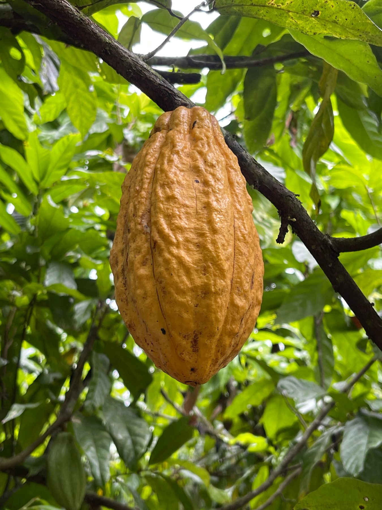
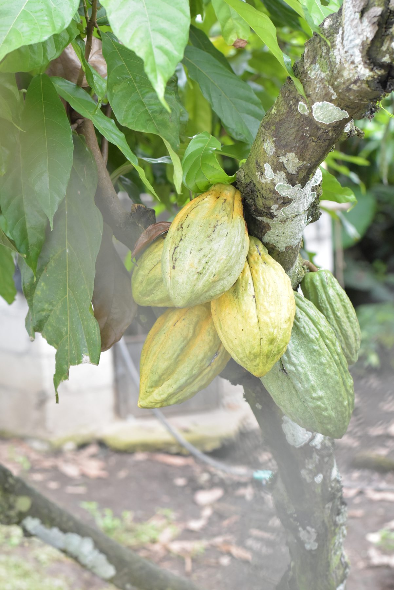
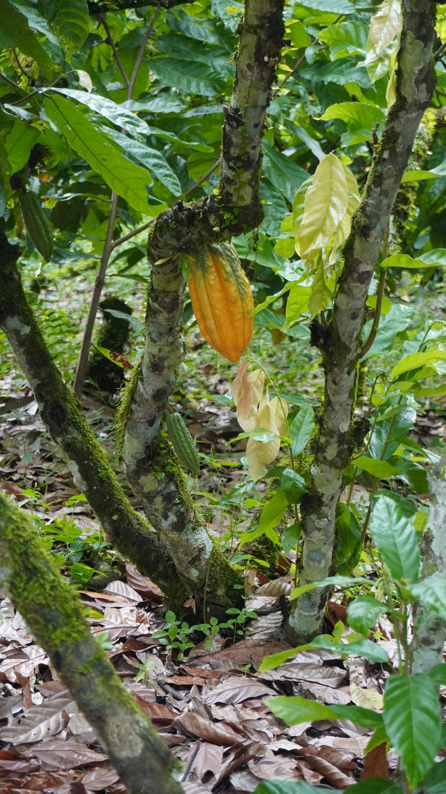
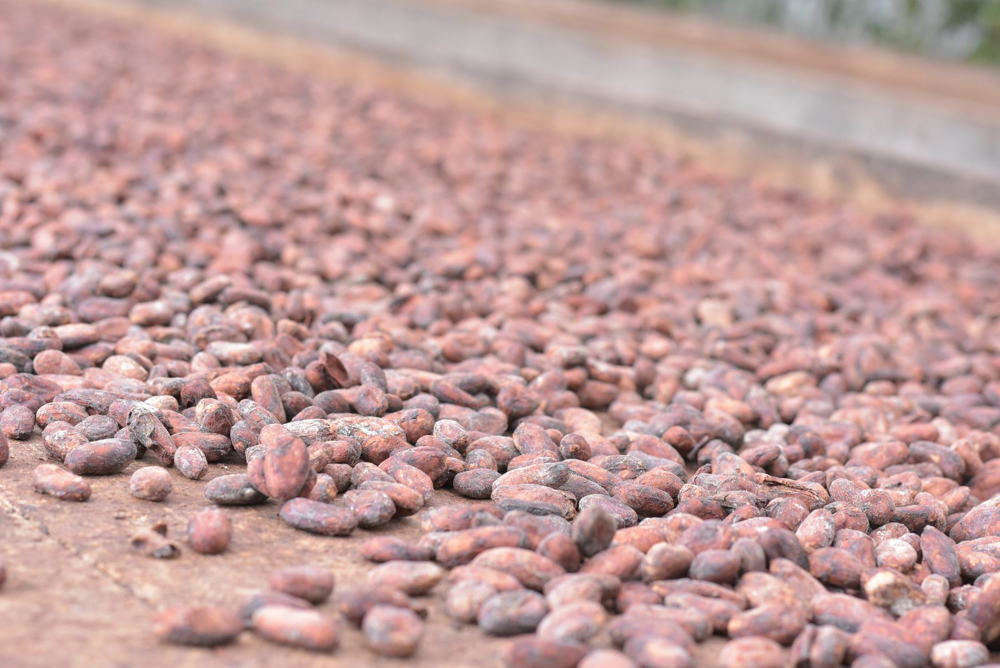
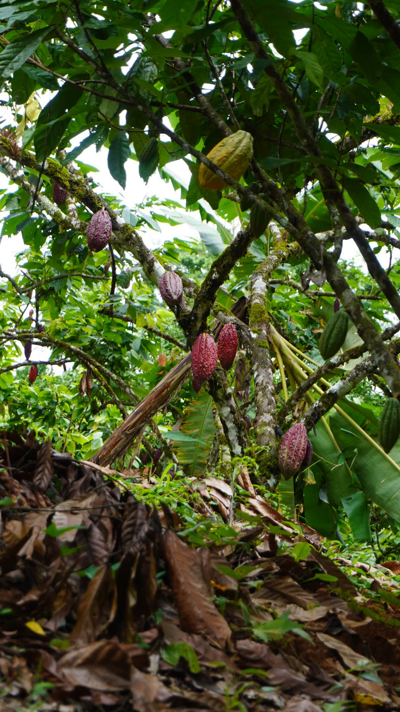
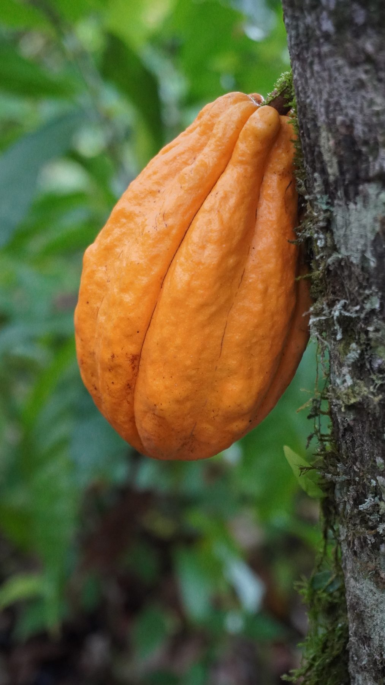

Made Right.Ecuador: el mejor cacao
Lo correcto empieza en el árbol.
Cacao Nacional fino de aroma · noroccidente de Ecuador
Ecuador cuenta con el mejor cacao del mundo (declaración de la ICCO), el cacao fino de aroma: genera aromas y sabores que, al ser procesados con maestría, logran experiencias sublimes en la boca, y al ser incorporados en mezclas magistrales con ingredientes nativos, provocan explosiones intensas, de sabor único e irresistible.
- 22 fincas familiares
- +100 cacaocultores
- 22 ha 1 ha por familia
- 600–625 plantas de cacao por hectárea

Cuidamos la tierra
Cacao intenso con versatilidad y equilibrio.
Cuidamos la tierra promoviendo y construyendo procesos sostenibles con los agricultores que cultivan esta espectacular semilla. No obstante, nuestro principal compromiso es con las familias que la cultivan, la calidad de vida alrededor de los campos y las personas de este proyecto.
La naturaleza en beneficio de la gente, no del exportador ni de la marca. La mayor parte de la ganancia del cacao se queda en el campo.
El mundo del cacao
Pichincha, noroccidente de Ecuador.









Conocimiento ancestral
Cultivan, secan, procesan y entregan un producto extraordinario.
Las personas con discapacidad participan en el cultivo del cacao, secan, procesan y entregan un producto extraordinario.
Los agricultores ecuatorianos han conservado un conocimiento ancestral del cultivo del cacao Fino de Aroma, transmitido a través de muchas generaciones. Nuestra empresa trabaja directamente con los pequeños agricultores para preservar las formas tradicionales de cultivo y la diversidad genética del cacao ecuatoriano.
La ruta de la inclusiónInclusión a través del cacao
Un mundo más inclusivo a través del cacao sostenible.
Impulsamos la cadena de valor del chocolate fino de aroma generando entornos de trabajo accesibles y fortaleciendo el asociacionismo de personas con discapacidad en el noroccidente de Ecuador.
RIGHTS Chocolate inició este programa piloto en 2019 para promover empleos verdes en territorios rurales. Desde 2023, se fortaleció dentro del proyecto «Acción inclusiva frente al cambio climático en Ecuador», ejecutado en conjunto con FEPAPDEM y con el apoyo financiero de USAID Ecuador.
¿Cómo lo implementamos?
- 01
Inclusión desde la raíz
Fortalecimiento de habilidades de personas con discapacidad y sus familias en técnicas sostenibles.
- 02
Manejo sostenible
Prácticas agrícolas responsables para la mitigación y adaptación al cambio climático.
- 03
Tecnologías sostenibles
Bioinsumos con materiales locales y construcción de biofábricas.
- 04
Territorios vulnerables
Intervención en ecosistemas frágiles para reducir la degradación ambiental y contaminación.
- 05
Generación de ingresos
Capacitación in situ y acompañamiento técnico continuo.
- 06
Localización eficiente
22 fincas familiares que involucran a más de 100 cacaocultores.
Insumos y capacitación
- Entrega de 600–625 plantas de cacao por hectárea (1 ha por familia, total 22 ha).
- Provisión de herramientas y materiales para biofábricas.
- Capacitación integral en policultivo orgánico y sostenible.
Del árbol a la barra
Desde las 22 fincas familiares el cacao viaja a nuestra planta en Quito, donde se produce chocolate galardonado en concursos nacionales e internacionales, fruto de más de 14 años de dominio técnico.
Cómo se hace en la planta